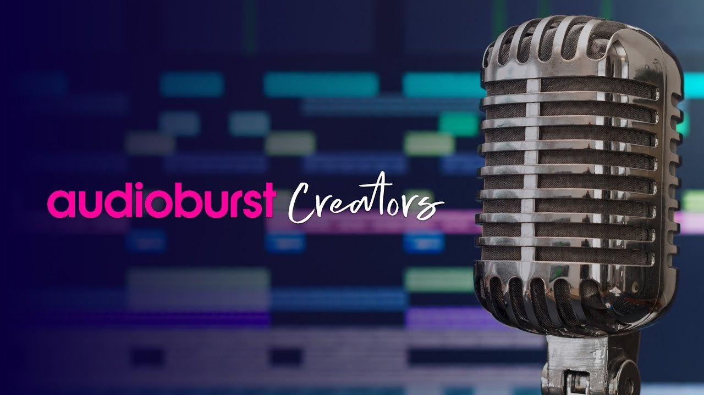

Finding, shaping and sharing one moment from hours of audio
Audioburst Creators is a SaaS product that lets podcasters and radio broadcasters reach their shows' content, then select, edit, design and share branded audio segments, called "audiobursts", on social media and the web. This case study follows the UX process from users and challenges, through flows and sketches, to the wireframes.
UX design: user research, context research, information architecture, prototyping and testing. Product management: this was also my case study for a product management course.
Navigating, and performing selections and actions, in a large multi-layered audio repository. Creators need quick access to a specific item, and the actions that follow need to feel seamless.
Understand creators and their critical route, name the conflict between the number of steps and the complexity of each step, then explore two flows and wireframe the screens that resolve it.
The goal was to find usability issues in the latest release, propose solutions, and decide which features to prioritize in the next iteration.
Tools: Sketches, Figma, Miro

A start-up with an unusual technology.
Audioburst is a small start-up in Israel. It developed an AI technology that automatically acquires spoken audio from radio and podcasts, digitizes and transcribes it, then segments and indexes it into short, context-related audio "bursts". The processed segments, the full shows and their transcriptions are stored in a searchable repository.
The product in this case study. Lets spoken-audio broadcasters reach their processed content, then select, design and share their own branded "audiobursts" to promote their shows.
Lets publishers discover audiobursts created by others and share them across their online platforms and social networks.
Lets people search for the latest spoken-audio bursts, by free search and by category.
Project goal. Identify usability issues with the latest release, propose solutions, and determine the critical features to prioritize for the next iteration of the product.
Moving through layers of audio.
A creator's content is layered: shows, episodes, and the bursts inside each episode. Finding one moment, and doing something useful with it, means moving through all of those layers without getting lost.
Navigating, and performing selections and actions, in a large multi-layered audio data repository. The user needs quick and easy access to specific audio items, and needs to perform the chosen actions as seamlessly as possible, to ensure success and satisfaction.
Creators with a lot of audio and little time.
Talk-audio creators pile up large amounts of audio over time. Browsing and finding one segment to publish can be a frustrating, time-consuming task. The product aims to help them arrange their content, then find, design and share branded segments from within their shows, to gain exposure and grow. They also want to follow popularity and interests, and to see analytics on what they published, so they can learn and improve.
- Podcasters
- Radio broadcasters
- Radio stations
- Media enterprises that create content
Both personas are based on real people, as starting points for the research.
A typical user story
Glan is a tech podcaster who is making his way into the podcasting world. He is focused on getting his podcast exposed through social media and other ways of publishing, to grow his audience. On the morning after his episode was broadcast, he decides to publish a notable audio segment from last night's show on his Twitter account.
He logs into Audioburst Creators and browses through last night's episode. He selects the segment he wants to share and edits its length with the interactive transcription-audio editing tool. He titles his burst, picks the audio player format recommended for sharing on Twitter, selects and attaches a cool background image, generates the new burst, and shares it on his Twitter account.
From a wish for exposure to a published burst.
The critical route follows the user story from login to share. Every step asks the user to look at something, listen to something, and decide.
As a podcaster with a limited audience and limited ways of exposing my shows and reaching new listeners, I want to gain more exposure, so I can grow my podcast audience and be successful.The user need that frames the critical route
Fewer steps, or simpler steps?
There is a conflict to resolve between the number of steps a user has to perform, and the complexity of the information they need to understand at each step, both visual and audio. How can navigating, orienting and acting in a multi-layered audio repository become an effective, and still easy, experience?
Specific challenges
Each part of the route raises its own questions.
Podcasters are not designers. How can we help them?
Can the select-and-share process be sped up, maybe with a quick share that uses defaults or presets?
Audio creators do not like to search by listening to their shows over and over. Could filtering by current-affairs impact, trending topics or user interests help them decide, and find content more easily?
Option 1 and Option 2: the same job, two ways.
I explored two directions, one for each side of the conflict. Option 1 is a wizard of multiple small steps, with lower complexity per screen. Option 2 is a quick share in a master-detail layout, with fewer steps and higher complexity per screen.
Option 1: multiple small steps, lower complexity
Read the option 1 steps as text
- Step 1Logged in on the homescreenThe user begins the process from the homescreen quick-access menu, and clicks "Create new Burst".
- Step 2Select show and episodeThe user sees their list of shows and a list of episodes for each show. The selected episode is shown by name, number and date (a calendar is being considered). They browse and select a specific episode from a specific show by clicking the list item. A search box supports this too.
- Step 3Select a burst to shareA sortable table shows the selected episode segmented into audio bursts. Each burst has attributes: episode name, burst number, time span in the episode, time aired, length, trending or impact (user-interest rating), related tags, and whether it was already created as a burst. The user can browse, play and listen, and picks the burst to share with its create-and-share button.
- Step 4Edit the burst title and trim its lengthThe customization editor has two parts. First, the burst information: change the title, choose a relevant category, add tags. Next, trim the audio segment using both the player slider and the transcription highlight and trimming tools (click and drag).
- Step 5Create and customize the burst design (option A)The user can select a format and style of player, add a background image or video, add a logo, caption and animations, edit font style, and save the design as a future template. Alternatively they can pick and customize a preset template, or import one of their own saved templates. A live preview updates, and "preview post" continues when they are satisfied.
- Step 5.1Import a design templateA categorized gallery of design templates. The user selects one from the preset gallery or from their own saved templates, previews it on the burst they are customizing, and goes back to the template page until they choose one.
- Step 6Preview and share, then doneA modal overlay shows a preview of the designed burst. The user has three options: create a post on a selected social network; choose "Done - save to my bursts" without posting; or close the overlay and go back to customization.
Option 2: quick share, fewer steps, higher complexity
Read the option 2 steps as text
- Step 1Logged in on the homescreenSame start: the quick-access menu and "Create new Burst".
- Step 2Select show and episodeThe same list of shows and episodes. Selecting an episode makes the item drop open.
- Step 3Select, customize and share a burstThe user trims the audio in the drop-down editor. In drop-down mode, a preview of the burst design appears in the right pane, based on a default template or the user's own preset. They can customize the design right there: add an image, change the title, choose a wave animation, and more. They can share instantly with the share button, or save the burst for later use or editing.
- Step 4Share the post in a modal windowA modal window shows a final preview of the post, and lets the user share it to social media straight from the app, then return to the list of bursts they were viewing. If they decide not to share, for example to change the design or content, they close the modal and return to the previous screen.
Too many decisions, so keep it minimal.
After designing a burst, the customization stage is where choices pile up. A note on the sketch sets the rule: keep options to a minimum and use designed preset templates.
Step-by-step visual checklist
To reduce mistakes, customization becomes a short guided checklist.
Read the customization steps as text
- Step 5-BCreate and customize the burst design (option B)After trimming the selected burst, the user sees a customization editor made of five steps. Each click on a step number opens an editing screen where they select or edit the related feature, for example the burst format that suits the social network they want to share on. For example, selecting a wave animation preset. When all the steps are complete, a "Done and share" button leads to the share screen.
- Step 5.1Import a design templateA categorized gallery of design templates, the same as in option 1.
How the product is organized.
The sitemap lays out the categories and hierarchy of the product: the home and navigation, the show, episode and burst levels, creation, and the supporting areas.
Prototyping the proposed solution.
These wireframes are the heart of the work: five desktop screens that put the main route together, from a home screen that shows value, to a preview and share. The design notes from the process stay as captions.
Alternatives I explored and set aside.
Making browsing, selecting, editing and sharing a specific audio segment in a multi-layered repository easy and effective meant trying more than one way. These variations did not make the main route.
What if the whole flow were voice?
The same process could run on voice commands and cues alone.
"Audioburst, find me that part when I talked with Dennis about the network last week..."
A ready-to-publish burst is presented. "Play first burst." It plays. "Change template to my Facebook template." A preview appears. "Publish on my Facebook account, please." The user's voice is recognized and their details are in the system, so one press of confirmation is all that is needed.
This audio-based process could happen on the go, even while driving. It takes Audioburst's own speech recognition and makes it a primary smart tool for performing actions in the software as well: editing ("start word: X, end word: Y"), searching, listening, publishing and more. It would be a unique value proposition that combines UX and technology.
A first step toward a more insightful UX process.
This UX design process is a first step. Until now the company focused on developing the technology and business opportunities. The main impact of this case study, presented to the stakeholders, was to trigger a more robust and insightful overall UX and UI design process: one that solves the unique problems and needs of users, and takes advantage of the unique technology Audioburst developed.